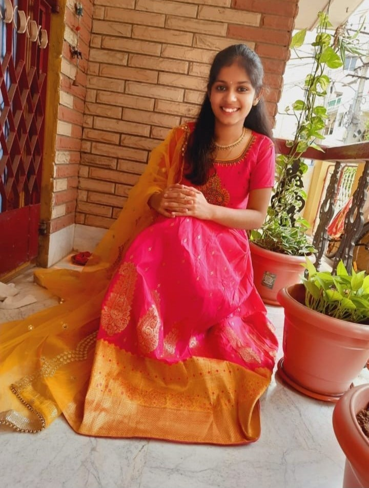

Just when I thought all the feelings were slowly fading away.....there comes a situation where I meet her, and I speak with her where all the feelings come rushing back to you You are doing well the whole time, but when you see her....you just forget the world Every tiny detail of you is so beautiful that it makes me fall again and again I've tried my best to tell you how I feel about you.......But that doesn't even come close to 1% of what I'm feeling You made me feel something that I haven't felt for quite a long time The happiness when I'm around you The envy inside me to beat up any guy who tries with you The jealous feeling when you talk about other guys in your college The anger when you don't lift my calls The miserable feeling when you and I fight This is all magic that only happens with you I receive many messages from friends through social media all the time...But I'm concerned about your message...whatever the message may be...I'll get excited. Same way, at the end of the day, If you don't text me, some incomplete feeling that you can't understand All I can say is, "I LOVE YOU IN EVERY UNIVERSE."

Today I met her again, I was doing good till that time, and I had made up my mind not to be excited, but as I saw, my heartbeat went up. I was playing the classic heartbreak song, but as she entered the car, I gave her my mobile to keep a song of her wish, and she played the perfect song where a guy falls in love with a girl just but looking at her eyes. During the whole time, she was sitting beside which made me feel like I was in heaven before death. And the main thing while I was off to smoke a cigarette, I asked my friend would you join; he denied it, and after I left for the smoking zone 5 mins later, she showed up just to give me company while I was smoking though she hates the smoke. Every time I meet her, there is something different every time The Spark and the magic have never faded. And I can say that it is a tough job to pen down her personality cause I don't know where to start and where to end. I always look at beautiful girls and admire them, But no one can come close to HER. SHE IS ONE OF A KIND.